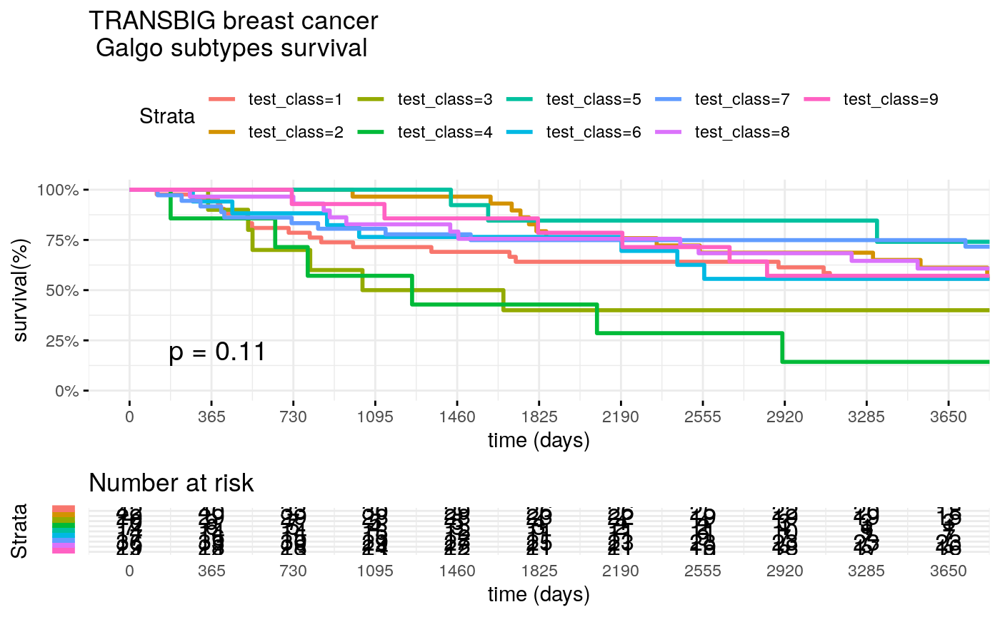
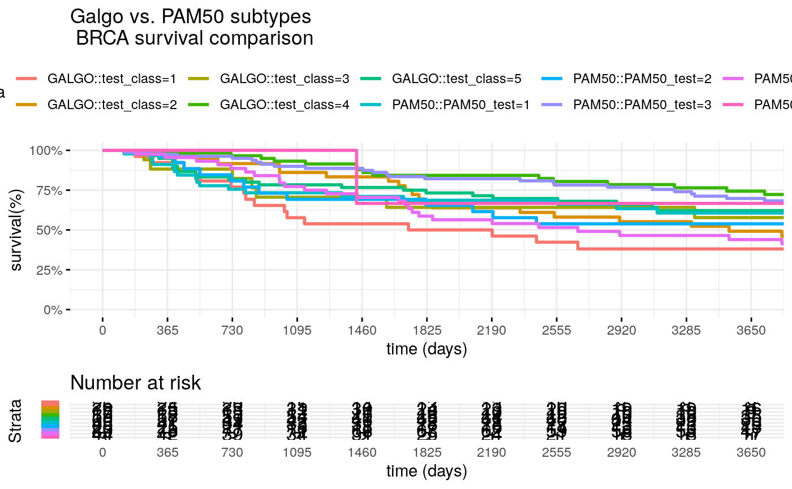

GalgoR user Guide
Martin E. Guerrero-Gimenez
Laboratory of Oncology, Institute of Medicine and Experimental Biology of Cuyo (IMBECU), National Scientific and Technical Research Council (CONICET), Mendoza, Argentina.mguerrero@mendoza-conicet.gob.ar
Juan Manuel Fernandez-Muñoz
Laboratory of Oncology, Institute of Medicine and Experimental Biology of Cuyo (IMBECU), National Scientific and Technical Research Council (CONICET), Mendoza, Argentina.Carlos A. Catania
Engineering School, National University of Cuyo, Mendoza, Argentina.2020-06-09
Source:vignettes/galgoR.rmd
galgoR.rmdAbstract
We report a novel method to identify specific transcriptomic phenotypes based on an elitist non-dominated sorting genetic algorithm that combines the advantages of clustering methods and the exploratory properties of genetic algorithms to discover biologically and clinically relevant molecular subtypes in different cancers.
Overview
In the new era of omics data, precision medicine has become the new paradigm of cancer treatment. Among all available omics techniques, gene expression profiling, in particular, has been increasingly used to classify tumor subtypes with different biological behavior. Cancer subtype discovery is usually approached from two possible perspectives:
- Using the molecular data alone with unsupervised techniques such as clustering analysis.
- Using supervised techniques focusing entirely on survival data.
The problem of finding patients subgroups with survival differences while maintaining cluster consistency could be viewed as a bi-objective problem, where there is a trade-off between the separability of the different groups and the ability of a given signature to consistently distinguish patients with different clinical outcomes. This gives rise to a set of optimal solutions, also known as Pareto-optimal solutions. To overcome these issues, we combined the advantages of clustering methods for grouping heterogeneous omics data and the search properties of genetic algorithms in galgoR: A flexible yet robust multi-objective meta-heuristic for disease subtype discovery based on an elitist non-dominated sorting genetic algorithm (NSGA-II), driven by the underlying premise of maximizing survival differences between groups while getting high consistency and robustness of the clusters obtained.
Algorithm
In the galgoR package, the NSGA-II framework was used for finding multiple Pareto-optimal solutions to classify patients according to their gene expression patterns. Basically, NSGA-II starts with a population of competing individuals which are evaluated under a set of fitness functions that estimate the survival differences and cohesiveness of the different transcriptomic groups. Then, solutions are ranked and sorted according to their non-domination level which will affect the way they are chosen to be submitted to the so-called “evolutionary operators” such as crossover and mutation. Once a set of well-suited solutions are selected and reproduced, a new offspring of individuals composed of a mixture of the “genetic information” of the parents is obtained. Parents and offspring are pooled and the best-ranked solutions are selected and passed to the next generation which will start over the same process again.
Installation
galgoR library
To install galgoR package, start R and enter:
devtools::install_github("https://github.com/harpomaxx/galgoR-package") library(galgoR)
Examples datasets
To standardize the structure of genomic data, we use the ExpressionSet structure for the examples given in this guide. The ExpressionSet objects are formed mainly by:
- A matrix of genetic expression, usually derived from microarray or RNAseq experiments.
- Phenotypic data, where we find information on the samples (condition, status, treatment, survival, and other covariates).
- Finally, these objects can also contain Annotations and feature Meta-data.
To start testing galgoR, we will use two Breast Cancer datasets. Namely, the UPP and the TRANSBIG datasets. Additionally, we will use PAM50 centroids to perform breas cancer sample classification. The datasets can be accesed from the following Bioconductor packages:
if (!requireNamespace("BiocManager", quietly = TRUE)) install.packages("BiocManager") BiocManager::install("breastCancerUPP") BiocManager::install("breastCancerTRANSBIG")
Also, some basic packages are needed to run the example in this vignette
Examples
Loading data
To access the ExpressionSets we use:
data(upp) Train<- upp rm(upp) data(transbig) Test<- transbig rm(transbig) #To access gene expression data train_expr<- exprs(Train) test_expr<- exprs(Test) #To access feature data train_features<- fData(Train) test_features<- fData(Test) #To access clinical data train_clinic <- pData(Train) test_clinic <- pData(Test)
Data tidying and preparation
Galgo can accept any numeric data like probe intensity from microarray experiments or RNAseq normalized counts, nevertheless, features are expected to be scaled across the dataset before being plugged in into the Galgo Framework. For PAM50 classification, Gene Symbols are expected, so probesets are mapped into their respective gene symbols. Probesets mapping for multiple genes are expanded while Genes mapped to multiple probes are collapsed selecting the probes with the highest variance for each duplicated gene.
Drop duplicates and NA’s
#Custom function to drop duplicated genes (keep genes with highest variance) DropDuplicates<- function(eset, map= "Gene.symbol"){ #Drop NA's drop= which(is.na(fData(eset)[,map])) eset=eset[-drop,] #Drop duplicates drop=NULL Dup=as.character(unique(fData(eset)[which(duplicated(fData(eset)[,map])),map])) Var= apply(exprs(eset),1,var) for(j in Dup){ pos=which(fData(eset)[,map]==j) drop= c(drop,pos[-which.max(Var[pos])]) } eset=eset[-drop,] featureNames(eset) <- fData(eset)[,map] return(eset) }
###Expand probesets that map for multiple genes
# Custom function to expand probesets mapping to multiple genes expandProbesets <- function (eset, sep = "///", map="Gene.symbol") { x <- lapply(featureNames(eset), function(x) strsplit(x, sep)[[1]]) y<- lapply(as.character(fData(eset)[,map]), function(x) strsplit(x, sep)) eset <- eset[order(sapply(x, length)), ] x <- lapply(featureNames(eset), function(x) strsplit(x, sep)[[1]]) y<- lapply(as.character(fData(eset)[,map]), function(x) strsplit(x, sep)) idx <- unlist(sapply(1:length(x), function(i) rep(i, length(x[[i]])))) idy <- unlist(sapply(1:length(y), function(i) rep(i, length(y[[i]])))) xx <- !duplicated(unlist(x)) idx <- idx[xx] idy <- idy[xx] x <- unlist(x)[xx] y <- unlist(y)[xx] eset <- eset[idx, ] featureNames(eset) <- x fData(eset)[,map] <- x fData(eset)$gene <- y return(eset) }
Train=DropDuplicates(Train) Train=expandProbesets(Train) #Drop NAs in survival Train <- Train[,!is.na(survival::Surv(time=pData(Train)$t.rfs,event=pData(Train)$e.rfs))] Test=DropDuplicates(Test) Test=expandProbesets(Test) #Determine common probes (Genes) Int= intersect(rownames(Train),rownames(Test)) Train= Train[Int,] Test= Test[Int,] identical(rownames(Train),rownames(Test)) #> [1] TRUE
For simplicity and speed, we will create a reduced expression matrix for the examples.
#First we will get PAM50 centroids from genefu package PAM50Centroids <- pam50$centroids PAM50Genes <- pam50$centroids.map$probe PAM50Genes<- featureNames(Train)[ featureNames(Train) %in% PAM50Genes] #Now we sample 200 random genes from expression matrix Non_PAM50Genes<- featureNames(Train)[ !featureNames(Train) %in% PAM50Genes] Non_PAM50Genes <- sample(Non_PAM50Genes,200, replace=FALSE) reduced_set <- c(PAM50Genes, Non_PAM50Genes) #Now we get the reduced training and test sets Train<- Train[reduced_set,] Test<- Test[reduced_set,]
Rescale expression matrix
Apply robust linear scaling as proposed in paper reference
Run galgo()
The main function in this package is galgo(). It accepts an expression matrix and survival object to find robust gene expression signatures related to a given outcome. This function contains some parameters that can be modified, according to the characteristics of the analysis to be performed.
Setting parameters
The principal parameters are:
- population: a number indicating the number of solutions in the population of solutions that will be evolved
- generations: a number indicating the number of iterations of the galgo algorithm
- nCV: number of cross-validation sets
- usegpu: logical default to FALSE, set to TRUE if you wish to use gpu computing (gpuR package must be properly installed and loaded)
- distancetype: character, it can be ‘pearson’ (centered pearson), ‘uncentered’ (uncentered pearson), ‘spearman’ or ‘euclidean’
- TournamentSize: a number indicating the size of the tournaments for the selection procedure
- period: a number indicating the outcome period to evaluate the RMST
population <- 30 # For testing reasons it is set to a low number but ideally should be above 100 generations <-15 # For testing reasons it is set to a low number but ideally should be above 150 nCV <- 5 distancetype <- "pearson" TournamentSize <- 2 period <- 3650
Run Galgo algorithm
set.seed(264) output <- galgoR::galgo(generations = generations, population = population, prob_matrix = train_expr, OS = train_surv, nCV = nCV, distancetype = distancetype, TournamentSize = TournamentSize, period = period) #> k rnkIndex CrowD #> result.2 3 0.10239766 151.0907 1 Inf #> result.9 3 0.05961810 409.9801 1 0.8726425 #> result.15 9 0.02689090 751.1537 1 0.6611805 #> result.21 4 0.05725412 467.1766 1 0.3037357 #> result.24 10 0.01306676 784.9277 1 Inf #> result.25 3 0.05238776 584.1107 1 0.6816997 #> k rnkIndex CrowD #> result.24 10 0.01306676 784.9277 1 Inf #> result.12 3 0.12984962 240.0751 1 Inf #> result.2 4 0.07194497 510.4745 1 0.8204652 #> result.14 3 0.10004832 240.4686 1 0.8061060 #> result.15 9 0.02689090 751.1537 1 0.5111291 #> result.13 5 0.04725973 598.1657 1 0.4171497 #> result.25 3 0.05238776 584.1107 1 0.3078916 #> k rnkIndex CrowD #> result.24 10 0.01306676 784.9277 1 Inf #> result.12 3 0.12984962 240.0751 1 Inf #> 2 0.11932403 384.7521 1 0.5569262 #> 4 0.08090165 513.4121 1 0.5523199 #> result.15 9 0.02689090 751.1537 1 0.5348767 #> 4 0.09433233 435.0991 1 0.4957795 #> result.13 5 0.04725973 598.1657 1 0.4348524 #> result.25 3 0.05238776 584.1107 1 0.3979323 #> k rnkIndex CrowD #> 8 0.01985866 843.3988 1 Inf #> 2 0.13188252 489.8190 1 Inf #> 2 0.13005681 529.2113 1 0.7489864 #> result.25 3 0.05238776 584.1107 1 0.7448515 #> 10 0.03267091 705.6021 1 0.2962084 #> result.15 9 0.02689090 751.1537 1 0.2684357 #> 10 0.04659097 635.9970 1 0.2460537 #> result.13 5 0.04725973 598.1657 1 0.1088497 #> k rnkIndex CrowD #> 8 0.01985866 843.3988 1 Inf #> 2 0.13188252 489.8190 1 Inf #> 2 0.13005681 529.2113 1 0.7336230 #> result.25 3 0.05238776 584.1107 1 0.7291271 #> 10 0.03267091 705.6021 1 0.2915317 #> result.15 9 0.02689090 751.1537 1 0.2647984 #> 10 0.04659097 635.9970 1 0.2423806 #> result.13 5 0.04725973 598.1657 1 0.1073031 #> k rnkIndex CrowD #> 8 0.01985866 843.3988 1 Inf #> 2 0.13188252 489.8190 1 Inf #> 2 0.13005681 529.2113 1 0.7081414 #> result.25 3 0.05238776 584.1107 1 0.6982100 #> 10 0.03267091 705.6021 1 0.2989499 #> result.15 9 0.02689090 751.1537 1 0.2790340 #> 10 0.04659097 635.9970 1 0.2511892 #> result.13 5 0.04725973 598.1657 1 0.1121791 #> k rnkIndex CrowD #> 8 0.01985866 843.3988 1 Inf #> 2 0.13188252 489.8190 1 Inf #> 2 0.13005681 529.2113 1 0.7309707 #> result.25 3 0.05238776 584.1107 1 0.7260699 #> 10 0.03267091 705.6021 1 0.2917989 #> result.15 9 0.02689090 751.1537 1 0.2656056 #> 10 0.04659097 635.9970 1 0.2428016 #> result.13 5 0.04725973 598.1657 1 0.1075630 #> k rnkIndex CrowD #> 8 0.01985866 843.3988 1 Inf #> 2 0.13188252 489.8190 1 Inf #> 2 0.11965661 532.3087 1 0.6705242 #> result.25 3 0.05238776 584.1107 1 0.6425442 #> 10 0.03267091 705.6021 1 0.3417480 #> 9 0.03238322 829.5102 1 0.2643447 #> 10 0.04659097 635.9970 1 0.2419276 #> 2 0.13005681 529.2113 1 0.1459670 #> result.13 5 0.04725973 598.1657 1 0.1071113 #> k rnkIndex CrowD #> 8 0.01985866 843.3988 1 Inf #> 2 0.13188252 489.8190 1 Inf #> 2 0.05636223 533.9356 1 0.5977243 #> 2 0.11965661 532.3087 1 0.5930281 #> 10 0.03267091 705.6021 1 0.3430897 #> 9 0.03238322 829.5102 1 0.2657905 #> 10 0.04659097 635.9970 1 0.2438916 #> result.25 3 0.05238776 584.1107 1 0.1488434 #> 2 0.13005681 529.2113 1 0.1479184 #> result.13 5 0.04725973 598.1657 1 0.1078326 #> k rnkIndex CrowD #> 8 0.01985866 843.3988 1 Inf #> 2 0.13188252 489.8190 1 Inf #> 2 0.05636223 533.9356 1 0.5762510 #> 2 0.11965661 532.3087 1 0.5653167 #> 10 0.03267091 705.6021 1 0.3532471 #> 9 0.03238322 829.5102 1 0.2719960 #> 10 0.04659097 635.9970 1 0.2469766 #> result.25 3 0.05238776 584.1107 1 0.1505427 #> 2 0.13005681 529.2113 1 0.1466774 #> result.13 5 0.04725973 598.1657 1 0.1097985 #> k rnkIndex CrowD #> 8 0.01985866 843.3988 1 Inf #> 2 0.13188252 489.8190 1 Inf #> 2 0.05636223 533.9356 1 0.5632353 #> 2 0.11965661 532.3087 1 0.5510257 #> 10 0.03267091 705.6021 1 0.3506107 #> 9 0.03238322 829.5102 1 0.2695959 #> 10 0.04659097 635.9970 1 0.2442132 #> result.25 3 0.05238776 584.1107 1 0.1488167 #> 2 0.13005681 529.2113 1 0.1443322 #> result.13 5 0.04725973 598.1657 1 0.1087062 #> k rnkIndex CrowD #> 8 0.01985866 843.3988 1 Inf #> 2 0.13188252 489.8190 1 Inf #> 2 0.05636223 533.9356 1 0.5613251 #> 2 0.11965661 532.3087 1 0.5523112 #> 10 0.03267091 705.6021 1 0.3383523 #> 9 0.03238322 829.5102 1 0.2609252 #> 10 0.04659097 635.9970 1 0.2375523 #> result.25 3 0.05238776 584.1107 1 0.1448428 #> 2 0.13005681 529.2113 1 0.1418374 #> result.13 5 0.04725973 598.1657 1 0.1054623 #> k rnkIndex CrowD #> 8 0.01985866 843.3988 1 Inf #> 2 0.13188252 489.8190 1 Inf #> result.25 3 0.05238776 584.1107 1 0.78360211 #> 2 0.12950053 544.4644 1 0.63883556 #> 5 0.04772669 692.6175 1 0.29431172 #> 10 0.03267091 705.6021 1 0.28105992 #> 9 0.03238322 829.5102 1 0.26354911 #> 2 0.13005681 529.2113 1 0.08465945 #> k rnkIndex CrowD #> 8 0.01985866 843.3988 1 Inf #> 2 0.17701411 531.4440 1 Inf #> 2 0.12950053 544.4644 1 0.8077532 #> result.25 3 0.05238776 584.1107 1 0.6756015 #> 5 0.04772669 692.6175 1 0.2728256 #> 10 0.03267091 705.6021 1 0.2665884 #> 9 0.03238322 829.5102 1 0.2527122 #> k rnkIndex CrowD #> 8 0.01985866 843.3988 1 Inf #> 2 0.17701411 531.4440 1 Inf #> 2 0.12950053 544.4644 1 0.7183940 #> result.25 3 0.05238776 584.1107 1 0.6138474 #> 5 0.04772669 692.6175 1 0.2555795 #> 10 0.03267091 705.6021 1 0.2520042 #> 9 0.03238322 829.5102 1 0.2398886 print(class(output)) #> [1] "galgo.Obj" #> attr(,"package") #> [1] "galgoR"
Galgo Object
The output of the galgo() function is an object of type ‘galgo.Obj’ that has two slots with the elements:
- Solutions
- ParetoFront.
Solutions
Is a l x (n + 5) matrix where n is the number of features evaluated and l is the number of solutions obtained.
- The submatrix l x n is a binary matrix where each row represents the chromosome of an evolved solution from the solution population, where each feature can be present (1) or absent (0) in the solution.
- Column n+1 represent the k number of clusters for each solutions
- Column n+2 shows the SC Fitness
- Column n+3 represent Survival Fitness values
- Column n+4 shows the solution rank
- Column n+5 represent the crowding distance of the solution in the final pareto front
ParetoFront
Is a list of length equal to the number of generations run in the algorithm. Each element is a l x 2 matrix where l is the number of solutions obtained and the columns are the SC Fitness and the Survival Fitness values respectively.
For easier interpretation of the ‘galgo.Obj’, the output can be transformed to a List or to a DataFrame objects.
to_list() function
This function restructurates a galgo.Obj to a more easy to understand an use list. This output is particularly useful if one wants to select a given solution and use its outputs in a new classifier. The output of type list has a length equals to the number of solutions obtained by the galgo algorithm.
Basically this output is a list of lists, where each element of the output is named after the solution’s name (solution.n, where n is the number assigned to that solution), and inside of it, it has all the constituents for that given solution with the following structure:
- solution.n$Genes: A vector of the features included in the solution
- solution.n$k: The number of partitions found in that solution
- solution.n$SC.Fit: The average silhouette coefficient of the partitions found
- solution.n$Surv.Fit: The survival fitnes value
- solution.n$Rank: The solution rank
- CrowD: The solution crowding distance related to the rest of the solutions
outputList <- to_list(output) head(names(outputList)) #> [1] "Solution.1" "Solution.2" "Solution.3" "Solution.4" "Solution.5" #> [6] "Solution.6"
To evaluate the structure of the first solution we can run:
outputList[["Solution.1"]] #> $Genes #> [1] "MYBL2" "KRT5" "RRM2" "EGFR" "BIRC5" "CDC20" #> [7] "CDC6" "KRT17" "ESR1" "MAPT" "CENPF" "PGR" #> [13] "KRT14" "GRB7" "CCNB1" "FOXA1" "MDM2" "LOC731884" #> [19] "RUNX2" "NDUFAF3" "XAGE1A" "PTPRA" "C9orf156" "CHI3L1" #> [25] "MRC1L1" "ZNF330" "MAMLD1" "ZCCHC6" "SRY" "MSX1" #> [31] "GPR65" "ALDOB" "CYP2C8" "CRYBB2P1" "AKAP8L" "CDKN1C" #> [37] "SFRS15" "PDCL" "RAI2" "DCT" "C8G" "PLEKHF2" #> [43] "MPRIP" "C5orf45" "AHSA1" "CCBL2" "LIN7A" "NCOA4" #> [49] "ZNF177" "GNS" "UBE2D1" "C9orf167" "CEACAM1" "STOML1" #> [55] "PRPF18" "NUP188" "TSPO" "C9orf45" "GORASP2" "GSTO1" #> [61] "YBX1P2" "PRPH" "OPCML" "CD302" "SH3GLB1" "HDAC3" #> [67] "RIMBP2" "ZNF236" "MGMT" "RBM34" "MYH8" "YPEL5" #> [73] "P2RY2" "SRSF4" "WNT11" "LOC729143" "GJC2" "TIAM1" #> [79] "DVL3" "RPL7P32" "KLHDC10" "ATP6V1D" "BOLA2" "NOL8" #> [85] "MAGEA2B" "LAT2" "GAN" "CLEC11A" "AFTPH" "KDR" #> [91] "CHRNG" "ABHD5" "EPS15" "C22orf30" "GCFC1" "PHC1" #> [97] "ATF4" "OBFC1" "SYCP1" "EYA4" "KPNA3" "PCNXL2" #> [103] "LRRN3" "RRAGC" "ICA1" "SKAP2" "KRT75" "GGH" #> [109] "HGF" "GSTP1" "ACTN2" #> #> $k #> [1] 8 #> #> $SC.Fit #> [1] 0.01985866 #> #> $Surv.Fit #> [1] 843.3988 #> #> $rank #> [1] 1 #> #> $CrowD #> [1] Inf
to_dataframe() function
The current function restructurates a galgo.Obj to a more easy to understand an use data.frame. The output data.frame has m x n dimensions, were the rownames (m) are the solutions obtained by the galgo algorithm. The columns has the following structure:
- Genes: The features included in each solution in form of a list
- k: The number of partitions found in that solution
- SC.Fit: The average silhouette coefficient of the partitions found
- Surv.Fit: The survival fitnes value
- Rank: The solution rank
- CrowD: The solution crowding distance related to the rest of the solutions
outputDF <- to_dataframe(output) head(outputDF) #> Genes k SC.Fit Surv.Fit Rank CrowD #> Solutions.1 MYBL2, K.... 8 0.01985866 843.3988 1 Inf #> Solutions.2 MYBL2, S.... 2 0.17701411 531.4440 1 Inf #> Solutions.3 MYBL2, K.... 2 0.12950053 544.4644 1 0.7183940 #> Solutions.4 MYBL2, R.... 3 0.05238776 584.1107 1 0.6138474 #> Solutions.5 MYBL2, K.... 5 0.04772669 692.6175 1 0.2555795 #> Solutions.6 PHGDH, K.... 10 0.03267091 705.6021 1 0.2520042
plot_pareto()
Once we obtain the galgo.obj from the output of galgo() we can plot the obtained Pareto front and see how it evolved trough the tested number of generations
plot_pareto(output)
Case study
Lung adenocarcinoma (LUAD) is one of the most common types of cancer and, to date, still presents high mortality rates. Currently, numerous molecular alteration for this type of cancer are well known but, unlike breast cancer, very few transcriptomic signatures have been developed for this type of cancer. In this regards, Wilkerson’s et al. have proposed a transcriptomic classification into three different LUAD molecular subtypes (Bronchoid, Magnoid, and Squamoid) which recapitulates naturally-occurring gene expression patterns that encompass different functional pathways and patient outcomes.
Data Preprocessing
To evaluate Galgo’s performance along with Wilkerson’s classification, we used two already scaled and reduced lung adenocarcinoma gene expression datasets included in the package (TCGA) and GSE68465 that can be download using the function use_rna_luad(). Aditionally, It also contains the Wilkerson’s centroids to perform lung adenocarcinoma sample classification. Wilkerson’s centroids were used to classify samples according to their corresponding molecular subtype.
Lung adenocarcinoma classification
The scaled expression values of each patient are compared with the prototypical centroids using Pearson’s correlation coefficient and the closest centroid to each patient is used to assign the corresponding labels.
#The expression of the toy datasets are already scaled #The reduced UPP dataset will be used as training set train_expression <- exprs(Train) train_clinic<- pData(Train) train_features<- fData(Train) train_surv<- survival::Surv(time=train_clinic$t.rfs,event=train_clinic$e.rfs) #The reduced TRANSBIG dataset will be used as test set test_expression <- exprs(Test) test_clinic<- pData(Test) test_features<- fData(Test) test_surv<- survival::Surv(time=test_clinic$t.rfs,event=test_clinic$e.rfs) #We change the rownames to be gene Symbol insted of Gene Id. rownames(train_expression)<- train_features$gene rownames(test_expression)<- test_features$gene #Wilkerson's centroids centroids<- PAM50Centroids #Extract features from both data.frames inBoth<- Reduce(intersect, list(rownames(train_expression),rownames(centroids))) #Classify samples Wilk.Class_train<- cluster_classify(train_expression[inBoth,],centroids[inBoth,]) table(Wilk.Class_train) #> Wilk.Class_train #> 1 2 3 4 5 #> 13 3 165 40 13 Wilk.Class_test<- cluster_classify(test_expression[inBoth,],centroids[inBoth,]) table(Wilk.Class_test) #> Wilk.Class_test #> 1 2 3 4 5 #> 38 6 109 35 10
Once the patients are classified according to their closest centroids, we can now evaluate the survival curves for the different types in each of the datasets
Survival of TCGA patients
surv_formula <- as.formula("Surv(train_clinic$t.rfs,train_clinic$e.rfs)~ Wilk.Class_train") tumortotal1 <- surv_fit(surv_formula,data=train_clinic) tumortotal1diff <- survdiff(surv_formula) tumortotal1pval<- pchisq(tumortotal1diff$chisq, length(tumortotal1diff$n) - 1, lower.tail = FALSE) p<-ggsurvplot(tumortotal1,data=train_clinic,risk.table=TRUE,pval=TRUE,palette="dark2", title="TCGA Lung adenocarcinoma \n Wilkerson subtypes survival", surv.scale="percent", conf.int=FALSE, xlab="time (days)", ylab="survival(%)", xlim=c(0,3650),break.time.by = 365, ggtheme = theme_minimal(), risk.table.y.text.col = TRUE, risk.table.y.text = FALSE,censor=FALSE) print(p)
Survival of GSE68465 patients
surv_formula <- as.formula("Surv(test_clinic$t.rfs,test_clinic$e.rfs)~ Wilk.Class_test") tumortotal2 <- surv_fit(surv_formula,data=test_clinic) tumortotal2diff <- survdiff(surv_formula) tumortotal2pval<- pchisq(tumortotal2diff$chisq, length(tumortotal2diff$n) - 1, lower.tail = FALSE) p<-ggsurvplot(tumortotal2,data=test_clinic,risk.table=TRUE,pval=TRUE,palette="dark2", title="GSE68465 Lung adenocarcinoma \n Wilkerson subtypes survival", surv.scale="percent", conf.int=FALSE, xlab="time (days)", ylab="survival(%)", xlim=c(0,3650),break.time.by = 365, ggtheme = theme_minimal(), risk.table.y.text.col = TRUE, risk.table.y.text = FALSE,censor=FALSE) print(p)
Find breast cancer gene signatures with GalgoR
Now we run Galgo to find cohesive and clinically meaningful signatures for LUAD using TCGA data as training set and GSE68465 data as test set
Set configuration parameters
population <- 15 generations <-5 nCV <- 5 distancetype <- "pearson" TournamentSize <- 2 period <- 3650 usegpu <- FALSE
Run Galgo on the training set
output= galgoR::galgo(generations = generations, population = population,prob_matrix = train_expression, OS=train_surv,usegpu=usegpu,nCV= nCV, distancetype=distancetype, TournamentSize=TournamentSize, period=period) #> k rnkIndex CrowD #> result.2 4 0.09110284 604.1839 1 1.145083 #> result.4 4 0.20961156 172.1146 1 Inf #> result.11 2 0.16903751 454.4083 1 1.018346 #> result.14 10 0.02640064 904.4585 1 Inf #> k rnkIndex CrowD #> result.4 4 0.20961156 172.1146 1 Inf #> result.14 10 0.02640064 904.4585 1 Inf #> result.2 4 0.09110284 604.1839 1 1.1248441 #> result.11 2 0.16903751 454.4083 1 0.9990402 #> k rnkIndex CrowD #> result.14 10 0.02640064 904.4585 1 Inf #> 2 0.23860424 454.2155 1 Inf #> 10 0.10596500 719.1333 1 1.0668844 #> result.11 2 0.16903751 454.4083 1 0.8177505 #> k rnkIndex CrowD #> result.14 10 0.02640064 904.4585 1 Inf #> 2 0.23860424 454.2155 1 Inf #> 10 0.10596500 719.1333 1 1.1811676 #> 2 0.19772422 492.2435 1 0.8486501 #> k rnkIndex CrowD #> result.14 10 0.02640064 904.4585 1 Inf #> 2 0.23860424 454.2155 1 Inf #> 10 0.10596500 719.1333 1 1.1722060 #> 2 0.20248371 521.1665 1 0.7369677 #> 2 0.21654760 477.7565 1 0.2262874 print(class(output)) #> [1] "galgo.Obj" #> attr(,"package") #> [1] "galgoR"
Analyzing Galgo results
Summary of the results
output_df<- to_dataframe(output) NonDom_solutions<- output_df[output_df$Rank==1,] # N of non-dominated solutions nrow(NonDom_solutions) #> [1] 5 # N of partitions found table(NonDom_solutions$k) #> #> 2 10 #> 3 2 #Average N of genes per signature mean(unlist(lapply(NonDom_solutions$Genes,length))) #> [1] 74.2 #SC range range(NonDom_solutions$SC.Fit) #> [1] 0.02640064 0.23860424 # Survival fitnesss range range(NonDom_solutions$Surv.Fit) #> [1] 454.2155 904.4585
###Select best performing solutions
Now we select the best performing solutions for each number of partitions (k) according to C.Index
RESULT<- non_dominated_summary(output=output,OS=train_surv, prob_matrix= train_expression, distancetype =distancetype, usegpu= usegpu ) best_sol=NULL for(i in unique(RESULT$k)){ best_sol=c(best_sol,RESULT[RESULT$k==i,"solution"][which.max(RESULT[RESULT$k==i,"C.Index"])]) } print(best_sol) #> [1] "Solutions.3" "Solutions.4" # [1] "Solutions.1" "Solutions.7" "Solutions.3" "Solutions.9"
Create prototypic centroids
Now we create the prototypic centroids of the selected solutions
CentroidsList <- create_centroids(output, solution_names = best_sol, trainset = train_expression)
Test Galgo signatures in a test set
We will test the Galgo signatures found with the TCGA training set in an independent test set
#testSet=rna_luad$GSE68465 #prob_matrix_test= testSet$expression_matrix #clinical_test=testSet$pheno_data #OS_test=Surv(time=clinical_test$time,event=clinical_test$status)
Classify train and test set into galgoR subtypes
train_classes<- classify_multiple(prob_matrix=train_expression,centroid_list= CentroidsList, distancetype = distancetype) test_classes<- classify_multiple(prob_matrix=test_expression,centroid_list= CentroidsList, distancetype = distancetype)
Calculate train and test set C.Index
To calculate the train and test C.Index, the risk coefficients are calculated for each subclass in the training set and are then used to predict the risk of the different groups in the test set. This is particularly important for signatures with high number of partitions, were the survival differences of different groups might overlap and change their relative order, which is of great importance in the C.Index calculation.
Prediction.models<- list() for(i in best_sol){ OS<- train_surv predicted_class<- as.factor(train_classes[,i]) predicted_classdf <- as.data.frame(predicted_class) colnames(predicted_classdf)<- i surv_formula <- as.formula(paste0("OS~ ",i)) coxsimple=coxph(surv_formula,data=predicted_classdf) Prediction.models[[i]]<- coxsimple }
Calculate C.Index for training and test set using the prediction models of the training set
C.indexes<- data.frame(train_CI=rep(NA,length(best_sol)),test_CI=rep(NA,length(best_sol))) rownames(C.indexes)<- best_sol for(i in best_sol){ predicted_class_train<- as.factor(train_classes[,i]) predicted_class_train_df <- as.data.frame(predicted_class_train) colnames(predicted_class_train_df)<- i CI_train<- concordance.index(predict(Prediction.models[[i]],predicted_class_train_df),surv.time=train_surv[,1],surv.event=train_surv[,2],outx=FALSE)$c.index C.indexes[i,"train_CI"]<- CI_train predicted_class_test<- as.factor(test_classes[,i]) predicted_class_test_df <- as.data.frame(predicted_class_test) colnames(predicted_class_test_df)<- i CI_test<- concordance.index(predict(Prediction.models[[i]],predicted_class_test_df),surv.time=test_surv[,1],surv.event=test_surv[,2],outx=FALSE)$c.index C.indexes[i,"test_CI"]<- CI_test } print(C.indexes) #> train_CI test_CI #> Solutions.3 0.6499647 0.5100592 #> Solutions.4 0.6092852 0.5652071 # train_CI test_CI #Solutions.1 0.6079561 0.5685536 #Solutions.7 0.6034458 0.6025023 #Solutions.3 0.6147336 0.6060875 #Solutions.9 0.6024516 0.5916318 best_signature<- best_sol[which.max(C.indexes$test_CI)] print(best_signature) #> [1] "Solutions.4" # "Solutions.3"
Evaluate prediction survival of Galgo signatures
We test best galgo signature with training and test sets
train_class <- train_classes[,best_signature] surv_formula <- as.formula("Surv(train_clinic$t.rfs,train_clinic$e.rfs)~ train_class") tumortotal1 <- surv_fit(surv_formula,data=train_clinic) tumortotal1diff <- survdiff(surv_formula) tumortotal1pval<- pchisq(tumortotal1diff$chisq, length(tumortotal1diff$n) - 1, lower.tail = FALSE) p<-ggsurvplot(tumortotal1,data=train_clinic,risk.table=TRUE,pval=TRUE,palette="dark2", title="TCGA Lung adenocarcinoma \n Galgo subtypes survival", surv.scale="percent", conf.int=FALSE, xlab="time (days)", ylab="survival(%)", xlim=c(0,3650),break.time.by = 365, ggtheme = theme_minimal(), risk.table.y.text.col = TRUE, risk.table.y.text = FALSE,censor=FALSE) print(p)

test_class <- test_classes[,best_signature] surv_formula <- as.formula("Surv(test_clinic$t.rfs,test_clinic$e.rfs)~ test_class") tumortotal1 <- surv_fit(surv_formula,data=test_clinic) tumortotal1diff <- survdiff(surv_formula) tumortotal1pval<- pchisq(tumortotal1diff$chisq, length(tumortotal1diff$n) - 1, lower.tail = FALSE) p<-ggsurvplot(tumortotal1,data=test_clinic,risk.table=TRUE,pval=TRUE,palette="dark2", title="GSE68465 Lung adenocarcinoma \n Galgo subtypes survival", surv.scale="percent", conf.int=FALSE, xlab="time (days)", ylab="survival(%)", xlim=c(0,3650),break.time.by = 365, ggtheme = theme_minimal(), risk.table.y.text.col = TRUE, risk.table.y.text = FALSE,censor=FALSE) print(p)

Comparison of Galgo vs Wilkerson classifiers
Compare Wilkerson classification vs Galgo classification in the GSE68465 (test) dataset
surv_formula1 <- as.formula("Surv(test_clinic$t.rfs,test_clinic$e.rfs)~ test_class") tumortotal1 <- surv_fit(surv_formula1,data=test_clinic) tumortotal1diff <- survdiff(surv_formula1) tumortotal1pval<- pchisq(tumortotal1diff$chisq, length(tumortotal1diff$n) - 1, lower.tail = FALSE) surv_formula2 <- as.formula("Surv(test_clinic$t.rfs,test_clinic$e.rfs)~ Wilk.Class_test") tumortotal2 <- surv_fit(surv_formula2,data=test_clinic) tumortotal2diff <- survdiff(surv_formula2) tumortotal2pval<- pchisq(tumortotal1diff$chisq, length(tumortotal2diff$n) - 1, lower.tail = FALSE) SURV=list(GALGO=tumortotal1,Wilk=tumortotal2 ) COLS=c(1:8,10) par(cex=1.35, mar=c(3.8, 3.8, 2.5, 2.5) + 0.1) p=ggsurvplot(SURV,combine=TRUE,data=test_clinic,risk.table=TRUE,pval=TRUE,palette="dark2", title="Galgo vs. Wilkerson subtypes \n Lung survival comparison", surv.scale="percent", conf.int=FALSE, xlab="time (days)", ylab="survival(%)", xlim=c(0,period),break.time.by = 365, ggtheme = theme_minimal(), risk.table.y.text.col = TRUE, risk.table.y.text = FALSE,censor=FALSE) print(p)

Session info
sessionInfo() #> R version 4.0.0 (2020-04-24) #> Platform: x86_64-pc-linux-gnu (64-bit) #> Running under: Ubuntu 18.04.4 LTS #> #> Matrix products: default #> BLAS: /usr/lib/x86_64-linux-gnu/blas/libblas.so.3.7.1 #> LAPACK: /usr/lib/x86_64-linux-gnu/lapack/liblapack.so.3.7.1 #> #> locale: #> [1] LC_CTYPE=en_US.UTF-8 LC_NUMERIC=C #> [3] LC_TIME=en_US.UTF-8 LC_COLLATE=en_US.UTF-8 #> [5] LC_MONETARY=en_US.UTF-8 LC_MESSAGES=en_US.UTF-8 #> [7] LC_PAPER=en_US.UTF-8 LC_NAME=C #> [9] LC_ADDRESS=C LC_TELEPHONE=C #> [11] LC_MEASUREMENT=en_US.UTF-8 LC_IDENTIFICATION=C #> #> attached base packages: #> [1] parallel stats graphics grDevices utils datasets methods #> [8] base #> #> other attached packages: #> [1] survminer_0.4.7 ggpubr_0.3.0 #> [3] ggplot2_3.3.1 genefu_2.21.0 #> [5] AIMS_1.21.0 e1071_1.7-3 #> [7] iC10_1.5 iC10TrainingData_1.3.1 #> [9] impute_1.63.0 pamr_1.56.1 #> [11] cluster_2.1.0 biomaRt_2.45.0 #> [13] limma_3.45.4 mclust_5.4.6 #> [15] survcomp_1.39.0 prodlim_2019.11.13 #> [17] survival_3.1-12 Biobase_2.49.0 #> [19] BiocGenerics_0.35.4 galgoR_0.2.0 #> [21] breastCancerUPP_1.27.0 breastCancerTRANSBIG_1.27.0 #> [23] BiocStyle_2.17.0 #> #> loaded via a namespace (and not attached): #> [1] amap_0.8-18 colorspace_1.4-1 ggsignif_0.6.0 #> [4] ellipsis_0.3.1 class_7.3-17 rio_0.5.16 #> [7] rprojroot_1.3-2 fs_1.4.1 rstudioapi_0.11 #> [10] farver_2.0.3 bit64_0.9-7 AnnotationDbi_1.51.0 #> [13] codetools_0.2-16 splines_4.0.0 doParallel_1.0.15 #> [16] knitr_1.28 SuppDists_1.1-9.5 km.ci_0.5-2 #> [19] broom_0.5.6 dbplyr_1.4.4 BiocManager_1.30.10 #> [22] compiler_4.0.0 httr_1.4.1 backports_1.1.7 #> [25] assertthat_0.2.1 Matrix_1.2-18 htmltools_0.4.0 #> [28] prettyunits_1.1.1 tools_4.0.0 gtable_0.3.0 #> [31] glue_1.4.1 dplyr_1.0.0 rappdirs_0.3.1 #> [34] Rcpp_1.0.4.6 carData_3.0-4 cellranger_1.1.0 #> [37] pkgdown_1.5.1 vctrs_0.3.1 nlme_3.1-147 #> [40] iterators_1.0.12 xfun_0.14 stringr_1.4.0 #> [43] openxlsx_4.1.5 lifecycle_0.2.0 rstatix_0.5.0 #> [46] XML_3.99-0.3 zoo_1.8-8 MASS_7.3-51.6 #> [49] scales_1.1.1 hms_0.5.3 yaml_2.2.1 #> [52] curl_4.3 gridExtra_2.3 memoise_1.1.0 #> [55] KMsurv_0.1-5 stringi_1.4.6 RSQLite_2.2.0 #> [58] rmeta_3.0 S4Vectors_0.27.11 desc_1.2.0 #> [61] foreach_1.5.0 zip_2.0.4 lava_1.6.7 #> [64] rlang_0.4.6 pkgconfig_2.0.3 evaluate_0.14 #> [67] lattice_0.20-41 purrr_0.3.4 labeling_0.3 #> [70] survivalROC_1.0.3 bit_1.1-15.2 tidyselect_1.1.0 #> [73] magrittr_1.5 bookdown_0.19 R6_2.4.1 #> [76] IRanges_2.23.8 generics_0.0.2 bootstrap_2019.6 #> [79] DBI_1.1.0 pillar_1.4.4 haven_2.3.1 #> [82] foreign_0.8-79 withr_2.2.0 abind_1.4-5 #> [85] tibble_3.0.1 crayon_1.3.4 car_3.0-8 #> [88] survMisc_0.5.5 KernSmooth_2.23-17 BiocFileCache_1.13.0 #> [91] rmarkdown_2.2 progress_1.2.2 grid_4.0.0 #> [94] readxl_1.3.1 data.table_1.12.8 blob_1.2.1 #> [97] forcats_0.5.0 digest_0.6.25 xtable_1.8-4 #> [100] tidyr_1.1.0 openssl_1.4.1 stats4_4.0.0 #> [103] munsell_0.5.0 nsga2R_1.0 askpass_1.1